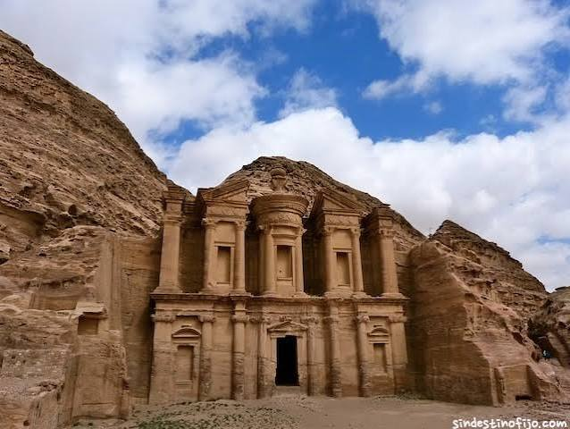

Petra: La Ciudad Rosa de Piedra

- Ubicación: Gobernación de Ma'an, Jordania
- Civilización: Nabatea
- Periodo: Siglo VIII a.C. – Siglo I d.C.
- Declaración UNESCO: 1985
1. Historia y la Civilización Nabatea
Petra fue la próspera capital del reino nabateo, un pueblo nómada árabe que transformó este cañón árido en un cruce comercial estratégico. Gracias a su ubicación, controlaba las rutas de caravanas que transportaban incienso, especias y sedas entre Arabia, Egipto, Grecia y Roma.
2. Arquitectura Esculpida y Gestión del Agua
Lo más asombroso de Petra es que sus edificios no fueron construidos levantando bloques, sino esculpidos directamente en los acantilados de piedra arenisca de tonos rojizos y rosados. Además, los nabateos diseñaron un impresionante sistema hidráulico con canales, represas y cisternas subterráneas que les permitía almacenar agua y sobrevivir en pleno desierto.
3. Monumentos Emblemáticos
El acceso a la ciudad se realiza a través del Siq, un estrecho desfiladero natural de más de un kilómetro. Al final del trayecto se revela "El Tesoro" (Al-Khazneh), un imponente templo con fachada helenística tallada en la roca. El complejo también alberga el Monasterio (Ad-Deir), un teatro romano excavado en piedra y cientos de tumbas reales.